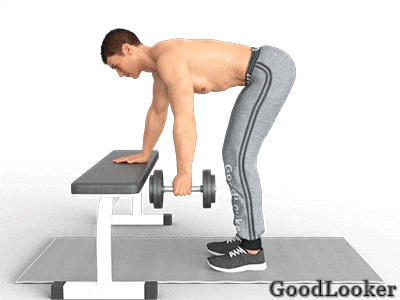
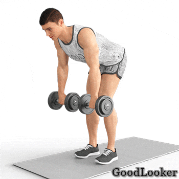
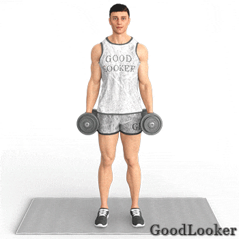
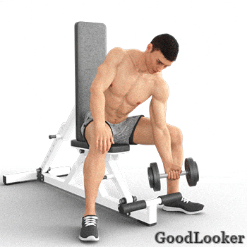
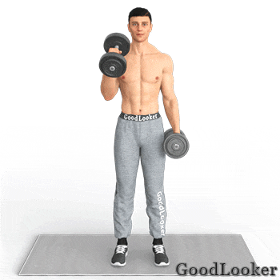

Спину и бицепсы лучше тренировать в один день по той же причине, что и грудь с трицепсами. Мышцы-сгибатели рук (бицепсы) принимают участие практически в каждом упражнении для развития широчайшей мышцы спины. Комбинированные упражнения для мужчин в домашних условиях позволяют добиться от тренировки максимальной продуктивности, одновременно задействуя важные мышечные группы организма.
В чем польза: Упражнение предназначено для качественной и сосредоточенной проработки каждой стороны широчайшей мышцы спины. Тяга гантелей – одно из самых популярных упражнений на спину. Поскольку используется опора в виде скамьи, вам будет проще удерживать равновесие, да и лишняя нагрузка с позвоночника снимается сама собой.
Как выполнять: Упритесь ладонью в поверхность скамейки. Свободная рука удерживает гантель, корпус опустите до параллели с полом. Тяга выполняется до уровня груди, после чего осуществляется маленькая пауза и вес опускается в стартовую фазу.
Сколько выполнять: 10-12 повторений в 4-5 подходов на каждую сторону.

В чем польза: Элемент нашей программы для мужчин на неделю направлен на акцентированное развитие широчайшей мышцы спины и задних пучков дельт. Он увеличивает статическую силу поясницы, а также помогает улучшить нейромышечную связь за счет своеобразного положения тела в процессе работы.
Как выполнять: Для начала необходимо встать на подогнутых ногах и слегка наклонить корпус вперед. Далее возьмите снаряды по типу грифа (продольно) и начните поднимать вес к уровню груди. Полагайтесь исключительно на работу широчайших мышц спины и заднего пучка дельтоидов.
Сколько выполнять: 10-12 повторений в 4-5 подходов.

В чем польза: Это одно из базовых движений для проработки объема, силы и рельефа бицепса рук. Такое упражнение для мужчин в домашних условиях нетравмоопасно и легко в освоении, поэтому оптимально подходит для любого уровня подготовки. Нагрузка регулируется весом снарядов.
Как выполнять: Поскольку работа ведется стоя, вам нужно взять гантели в обе руки, расправить плечи и слегка прогнуться в спине. Обязательно прижмите локти к бокам, чтобы избежать инерционных движений. Далее начните поднимать вес, одновременно разворачивая кисть ладонью к себе. Движения производятся на каждую руку поочередно.
Сколько выполнять: 10-12 повторений на каждую руку в 4-5 подходов.

В чем польза: Вариант тренировки рук полностью исключает читинг в виде раскачивания, который свойственен предыдущему упражнению. Работа сидя на скамье обеспечивает максимальную нагрузку мышцы-сгибателя руки, позволяя качественно проработать его. Новичкам, таким образом, будет легче сконцентрироваться на нужной мышце.
Как выполнять: Сядьте, расставив ноги по обе стороны стула. Взяв снаряд в руку, зафиксируйте ее локтем на поверхности бедра. Опускайте вес, не допуская полного защелкивания суставного замка в локте. Подъем осуществляется до уровня плеча, соблюдая небольшие паузы в пиковых точках для максимизации напряжения.
Сколько выполнять: 10-12 повторений в 4-5 подходов.

В чем польза: В профессиональном бодибилдинге «молот» используется для акцентированной нагрузки длинной головки мышцы-сгибателя руки. Как следствие, объемы бицепса становятся значительно больше, да и предплечье в ходе работы принимает колоссальное участие. Нередко «молот» входит в ряд функциональных упражнений для боксеров, борцов и гимнастов.
Как выполнять: Работа ведется стоя, так же, как и при классических подъемах на бицепс. В данном случае вам не придется разворачивать кисть, держа гантели параллельно грифами друг другу. Работать можно как одновременно, так и по очереди с акцентом на каждую руку.
Сколько выполнять: 10-12 повторений в 4-5 подходов.

В чем польза: Потрясающее упражнение для корректировки осанки, укрепления поясничного отдела, а также развития общей координации движений. Представленный элемент может показаться сложным для новичков, но при постепенном освоении вы полюбите это упражнение и оцените его эффективность.
Как выполнять: Распрямитесь на гимнастическом коврике, предварительно устроившись на нем лежа вниз животом. Максимально вытяните верхние и нижние конечности, после чего одновременно поднимите их от пола на 10-15 см. В итоге получается дугообразный прогиб спины. В пиковой фазе сделайте маленькую задержку, после чего медленно опустите руки и ноги обратно на пол.
Сколько выполнять: 10-12 повторений в 4-5 подходов.